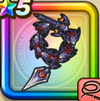

闇の覇者の竜鞭
攻略班 8.5点 / ドラゴン打ちらせん打ちキングウィップ閃烈の竜撃竜王の業火※錬成で強化可能
くわしい特徴
【レベル別習得スキル】 Lv1【レンジャー】すばやさ+10 Lv1ドラゴン打ち（消費MP：5）ドラゴン系に威力200%それ以外の系統は130%の体技ダメージを与える Lv10らせん打ち（消費MP：9）らせん状に打ち敵1体を威力180%の体技ダメージを与えたまに混乱させる Lv15キングウィップ（消費MP：7）敵全体に120％の無属性体技ダメージを与え、MPを25ほど回復する Lv20閃烈の竜撃（消費MP：24）敵1体に340％のギラ属性体技ダメージ Lv30竜王の業火（消費MP：36）敵全体にギラ属性の特大ブレスダメージを与える Lv35ドラゴン系へのダメージ+5% Lv40悪魔系へのダメージ+5% Lv45さいだいMP+12 Lv50攻撃力+12錬成スキル改1闇の覇者の威風（消費MP：18）戦闘開始時に自身のブレス威力を上げる。まれにかなり上げる(効果4ターン)改2竜王の業火改（消費MP：57）敵全体にメラかギラかドルマ属性のブレス特大ダメージを与える。たまにブレス耐性を下げる改3ドラゴン系へのダメージ+10%改4錬成ぶき特別演出解放・メガモン討伐結果発表時に特別演出が追加・武器の見た目に特別なエフェクトが追加 【限界突破スキル】 1凸スキルの斬撃・体技・ブレスダメージ+5% 2凸スキルの斬撃・体技・ブレスダメージ+5% 3凸スキルの斬撃・体技・ブレスダメージ+5% 4凸スキルの斬撃・体技・ブレスダメージ+5%